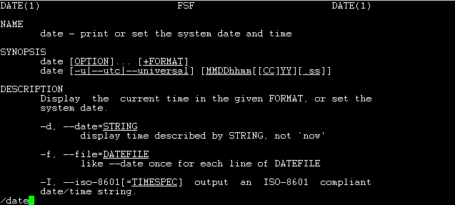

登入系统有这么难吗？呵呵！并不难，不过，虽然说是这样说，然而很多人第一次登入 Linux 的感觉都是『接下来我要干啥？』如果是以图形接口登入的话，或许还有很多好玩的事物，但是，要是以文字接口登入的话，面对着一片黑压压的屏幕，还真不晓得要干嘛呢！嗯！为了让大家更了解如何正确的使用 Linux ，正确的登入与离开系统还是需要说明的！
| Mandrake Linux release 9.0 (dolphin) for i586 Kernel 2.4.19-16mdk on an i686 / tty1 test login: root Password: [root@test root]# |
| [root@test root]# exit |
- Ctrl + Alt + [F1] ~ [F6] ：文字接口登入 tty1 ~ tty6 终端机；
- Ctrl + Alt + [F7] ：图形接口桌面。
| [root@test root]# startx |
好了，既然我们是要以文字接口来介绍 Linux ，那么自然就需要先谈一谈指令下达的方式��！一般而言，指令下达的方式为：
[root@test root]# command [-options] parameter1 parameter2 ...
指令 选项 参数(1) 参数(2)说明：
0. 上面的指令与参数之下达中，字母的大小写代表意义不同：
1. command 为指令的名称，例如变换路径的指令为 cd 等等；
2. 中刮号[]并不存在于实际的指令中，而加入参数设定时，通常为 - 号，
有时候完整参数名称会输入 -- 符号；
3. parameter1 parameter2.. 为依附在 option 后面的参数，
或者是 command 的参数；
4. command, -options, parameter1.. 这几个咚咚中间以空格来区分，
不论空几格 shell 都视为一格；
5. 指令太长的时候，可以使用 \ 符号来跳脱 [Enter] 符号，
使指令连续到下一行。
实例：
以 ls 列出 /root 这个目录中的隐藏文件与相关的属性参数；
[root@test /root]# ls -al /root
[root@test /root]# ls -al /root
上面这两个指令的下达方式是一模一样的执行结果喔！为什么？请参考上面的说明吧！关于更详细的文字模式使用方式，我们会在『Shell 与 Shell Scripts』篇幅中再来强调喔！此外，请特别留意，在 Linux 的环境中，『大小写字母是不一样的东西！』也就是说，在 Linux 底下， VBird 与 vbird 这两个档案是『完全不一样的』档案呢！所以，您在下达指令的时候千万要注意到您的指令是大写还是小写。例如当您输入底下这个指令的时候，看看有什么现象：
[root@test /root]# date
[root@test /root]# Date
[root@test /root]# DATE
很好玩吧！不一样的大小写显示的结果会有错误讯息发生呢！因此，请千万记得这个状态呦！好��，底下我们来练习一下一些简单的指令，好让您可以了解指令下达方式的模式：
- 显示日期的指令： date
- 显示日历的指令： cal
- 简单好用的计算器： bc
- 显示日期的指令： date
如果在文字接口上面，想要知道目前的时间，那么就直接在指令列模式输入 date 即可显示：
[root@test root]# date
Wed Oct 16 15:19:59 CST 2002
上面是显示：星期三, 十月十六日, 15:19 分， 59 秒，在 2002 年的 CST 时区！请赶快动手做做看呦！好了，那么如果我想要以 2002/10/16 显示目前的时间呢？那么就使用 date 的相关功能吧！
[root@test root]# date +%Y/%m/%d
2002/10/16
[root@test root]# date +%H:%M
15:32
那个『 +%Y%m%d 』就是 date 的一些参数功能啦！很好玩吧！
- 显示日历的指令： cal
那如果我想要列出目前这个月份的月历呢？呵呵！直接给他下达 cal 即可！
[root@test root]# cal
October 2002
Su Mo Tu We Th Fr Sa
1 2 3 4 5
6 7 8 9 10 11 12
13 14 15 16 17 18 19
20 21 22 23 24 25 26
27 28 29 30 31
基本上， cal (calendar) 这个指令可以做的事情还很多，你可以显示整年的月历情况：
[root@test root]# cal 2002
2002January February March
Su Mo Tu We Th Fr Sa Su Mo Tu We Th Fr Sa Su Mo Tu We Th Fr Sa
1 2 3 4 5 1 2 1 2
6 7 8 9 10 11 12 3 4 5 6 7 8 9 3 4 5 6 7 8 9
13 14 15 16 17 18 19 10 11 12 13 14 15 16 10 11 12 13 14 15 16
20 21 22 23 24 25 26 17 18 19 20 21 22 23 17 18 19 20 21 22 23
27 28 29 30 31 24 25 26 27 28 24 25 26 27 28 29 30
31
April May June
Su Mo Tu We Th Fr Sa Su Mo Tu We Th Fr Sa Su Mo Tu We Th Fr Sa
1 2 3 4 5 6 1 2 3 4 1
7 8 9 10 11 12 13 5 6 7 8 9 10 11 2 3 4 5 6 7 8
14 15 16 17 18 19 20 12 13 14 15 16 17 18 9 10 11 12 13 14 15
21 22 23 24 25 26 27 19 20 21 22 23 24 25 16 17 18 19 20 21 22
28 29 30 26 27 28 29 30 31 23 24 25 26 27 28 29
30
July August September
Su Mo Tu We Th Fr Sa Su Mo Tu We Th Fr Sa Su Mo Tu We Th Fr Sa
1 2 3 4 5 6 1 2 3 1 2 3 4 5 6 7
7 8 9 10 11 12 13 4 5 6 7 8 9 10 8 9 10 11 12 13 14
14 15 16 17 18 19 20 11 12 13 14 15 16 17 15 16 17 18 19 20 21
21 22 23 24 25 26 27 18 19 20 21 22 23 24 22 23 24 25 26 27 28
28 29 30 31 25 26 27 28 29 30 31 29 30October November December
Su Mo Tu We Th Fr Sa Su Mo Tu We Th Fr Sa Su Mo Tu We Th Fr Sa
1 2 3 4 5 1 2 1 2 3 4 5 6 7
6 7 8 9 10 11 12 3 4 5 6 7 8 9 8 9 10 11 12 13 14
13 14 15 16 17 18 19 10 11 12 13 14 15 16 15 16 17 18 19 20 21
20 21 22 23 24 25 26 17 18 19 20 21 22 23 22 23 24 25 26 27 28
27 28 29 30 31 24 25 26 27 28 29 30 29 30 31
也就是说，基本上， cal 接的语法为：
[root@test root]# cal [month] [year]
所以，我想要知道 2003 年 2 月的月历，可以直接下达：
[root@test root]# cal 2 2003
February 2003
Su Mo Tu We Th Fr Sa
1
2 3 4 5 6 7 8
9 10 11 12 13 14 15
16 17 18 19 20 21 22
23 24 25 26 27 28
所以，未来您可以很轻易的就以 cal 来取得日历上面的日期��！简直就是万年历啦！ ^_^
- 简单好用的计算器： bc
如果我想要使用简单的计算器呢？很容易呀！就使用 bc 即可！在输入 bc 之后，显示出版本信息之后，就进入到等待指示的阶段，如下所示：
[root@test root]# bc
bc 1.06
Copyright 1991-1994, 1997, 1998, 2000 Free Software Foundation, Inc.
This is free software with ABSOLUTELY NO WARRANTY.
For details type `warranty'.
==> 光标在这里等待您的输入
好了，来基本的操作一下，在此之前，必须要先告知几个使用的运算子：
+ 加法
- 减法
* 乘法
/ 除法
^ 指数
% 余数
[root@test root]# bc
bc 1.06
Copyright 1991-1994, 1997, 1998, 2000 Free Software Foundation, Inc.
This is free software with ABSOLUTELY NO WARRANTY.
For details type `warranty'.
1+2+3+4
10
7-8+3
2
10*52
520
10%3
1
10^2
100
10/100
0
quit==> 离开 bc 这个计算器
在上表当中，黄色的字表示输入的东西，而在每个黑体的字底下就是输出的结果。咦！每个计算都还算正确，怎么 10/100 会变成 0 呢？这是因为 bc 预设仅输出整数，如果要输出小数点下位数，那么就必须要执行 scale=number ，那个 number 就是小数点位数，例如：
[root@test root]# bc
bc 1.06
Copyright 1991-1994, 1997, 1998, 2000 Free Software Foundation, Inc.
This is free software with ABSOLUTELY NO WARRANTY.
For details type `warranty'.
scale=3
1/3
.333
340/2349
.144
quit
好了！就是这样子啦！简单的很吧！以后你可以轻轻松松的进行加减乘除啦！
- 一些按键的说明：
在 Linux 底下有几个常用的按键，这里要给他说明一下，以方便你未来在文字接口操作的情况下，可以直接按下这些按键来帮你处理事务喔！
- Ctrl + c ： 在 Linux 底下，如果您输入了错误的指令或参数，有的时候这个指令或程序会在系统底下『跑不停』这个时候怎么办？别担心，如果您想让当前的程序『停掉』的话，可以输入：『Ctrl』＋『c』，这个就是中断目前程序的按键啦！
- q ： 有很多程序在跑的时候(例如 man 这个指令或 more 这个指令)，如果您想跳出来，就按下 q 即可！这个按钮也是很多指令常定义的退出钮。
- [Tab] ：会不会觉得打字很疲劳啊！没关系，在 Linux 的预设文字接口 ( 我们称为 BASH Shell ) 当中，有个很棒的功能，叫做是『命令与档案补全』的功能！那就是键盘左边的[Tab]这个按键啦！他有什么好处呢？例如刚刚我们要执行 cal 这个指令对吧，这个时候，你只要输入 ca[tab][tab] ，也就是输入 ca 之后，再按两次 [tab] 按键，您会发现什么事呢？啊！所以以 ca 为开头的指令都被显示出来啦！很棒吧！另外，如果你输入『 ls -al .bash[tab][tab]』会发生什么事呢？哈哈！在该目录下面所有以 .bash 的文件名称都会被显示出来！所以��，你就会知道，[tab] 按键是『很棒的功能！』在文字接口底下，要多按 [tab] 按键，可以避免打错字或下错指令喔！
总之，在 Linux 底下，文字接口的功能是很强悍的！要多多的学习他，而要学习他的基础要诀就是......多使用、多熟悉啦！
- 错误讯息的查看
万一我下达了错误的指令怎么办？不要紧呀！您可以藉由屏幕上面显示的错误讯息来了解你的问题点，那就很容易知道如何改善这个错误讯息��！举个例子来说，假如我输入了 DATE 这个错误的讯息了：
[root@test root]# DATE
bash: DATE: command not found
上面那个 bash: 表示的是我们的 Shell 的名称，那么什么是 Shell 呢？还记不记得我们在 什么是 Linux 的时候提到的『使用者、使用者接口、核心、硬件』的架构呢？呵呵！那个 shell 就是使用者接口��！在 Linux 底下预设的使用者接口就是 bash shell ��！好了，那么上面的例子说明了， bash 有错误，什么错误呢？ bash告诉你：
先介绍这几个指令让您玩一玩先，更详细的指令操作方法我们会在第三篇的时候再进行介绍！好了，万一我在操作 date 这个指令的时候，手边又没有这本书，我要怎么知道要如何加参数，好让输出的结果符合我想要的输出格式呢？嘿嘿！到下一节 VBird 告诉你怎么办吧！
DATE: command not found ==>指令找不到啦！
所以说，系统上面可能并没有 DATE 这个指令��！就是这么简单！那如果是底下的样子呢？
[root@test root]# cal 13 2003
cal: illegal month value: use 1-12
呵呵！这下子换到 cal 警告你啦， illegal month value: use 1-12，看不懂英文？没关系，又不是考试，赶快拿本英文字典在旁边对照着看呀！意思是说『不合法的月份值，应该使用 1-12 之间的数字！』所以各位看倌您看看，跟着屏幕的错误讯息瞧，很容易知道问题的错误是什么吧！因此，以后如果出现了问题，屏幕上的讯息真的是很重要的呢！不要忽略了他呦！
哇！ linux 还有在线求助系统啊！呵呵！这是『一定要的啦！』因为 Linux 是由所谓的『虚拟团队』开发出来的，所以虽然他的功能很多，但是指令也是有点杂乱的！如果没有在线说明文件的话，那么肯定会让大家无所适从的！因此，不论任何人写出了一个很好用的指令后，他也会同是附上这个指令的说明文件喔！你可以很轻松的就查询到这个指令的使用方法呢！很不赖吧！底下说一下几个在 Linux 上面很常用的求助指令喔！
- 最广泛使用的在线查询： man
- 用在 Linux 上面的在线查询： info
- Linux 系统中的说明文件汇集目录： /usr/share/doc
- man
嗄？不知道怎么使用 date 这个指令？嘿嘿嘿！不要担心，我们 Linux 上面的在线求助系统已经都帮您想好要怎么办了，所以你只要使用简单的方法去寻找一下说明的内容，马上就清清楚楚的知道该指令的用法了！怎么看呢？就是找男人 ( man ) 呀！？喔！不是啦！ man 是 manual (操作说明) 的简写啦！只要下达：『 man date 』马上就会有清楚的说明出现在你面前：
[root@test root]# man date
DATE(1) FSF DATE(1)NAME
date - print or set the system date and timeSYNOPSIS
date [OPTION]... [+FORMAT]
date [-u|--utc|--universal] [MMDDhhmm[[CC]YY][.ss]]DESCRIPTION
Display the current time in the given FORMAT, or set the system date.-d, --date=STRING
display time described by STRING, not `now'-f, --file=DATEFILE
like --date once for each line of DATEFILE……………………………………（中间省略）
ENVIRONMENT
TZ Specifies the timezone, unless overridden by command line parameters. If
neither is specified, the setting from /etc/localtime is used.AUTHOR
Written by David MacKenzie.REPORTING BUGS
Report bugs to <bug-sh-utils@gnu.org>.COPYRIGHT
Copyright ?2000 Free Software Foundation, Inc.
This is free software; see the source for copying conditions. There is NO war?
ranty; not even for MERCHANTABILITY or FITNESS FOR A PARTICULAR PURPOSE.SEE ALSO
The full documentation for date is maintained as a Texinfo manual. If the info and
date programs are properly installed at your site, the commandinfo date
should give you access to the complete manual.
GNU sh-utils 2.0.11 October 2000 DATE(1)
(END)
看！马上就知道一大堆的用法了！出现的这个屏幕画面，我们称呼他为 man page ，您可以在里头查询他的用法与相关的参数说明，如果要向下翻页的话，可以按下键盘的空格键 ，也可以使用 [Page Up] 与 [Page Down] 来翻页呢！同时，如果您知道某些关键词的话，那么可以在任何时候输入『 /word 』，来主动搜寻关键词！例如在上面的搜寻当中，我输入了 /date 会变成怎样？

此外，看到了最后面的几个信息了吗？包括了这个程序的『环境』、『作者』及相关信息等等，最重要的是那个『See Also』的内容��，该内容告诉我们，还有其它相关的程序可以查询！呵呵！查了一个，可以知道更多个！棒！那么离开 man page 就直接输入 『q』 这个字母即可离开！整理一下，在 man page 当中可以按的键有：
- 空格键： 往下翻一页；
- page up： 往上翻一页；
- page down： 往下翻一页；
- home： 回到最前面；
- end： 去到最终页；
- /word： 搜寻 word 这个档案。
那么这些 man page 放在哪里呢？不同的 distribution 通常可能有点差异性，不过，通常是放在 /usr/share/man 里头，然而，我们可以透过修改他的 man page 搜寻路径来改善这个目录的问题！修改 /etc/man.config ( 有的版本为 man.conf ) 即可��！至于更多的关于 man 的讯息您可以使用『 man man 』来查询呦！关于更详细的设定，我们会在 Shell 的章节当中继续的说明喔！
- info
除了 man 之外，在 Linux 里面亦提供另外一种查询的方式，称为 info ，使用的方法跟 man 差不多，
[root@test root]# info command
使用 info 后面接您要查询的指令名称即可！这个 info 的功能比 man 还要更强大呢！在这个 info page 里面，你可以输入 p 及 n 往前及往后翻页，如果看到『 * text :』的项目时，将光标移到该项目上面，按下『Enter』还可以进入次页面的说明画面中！很厉害喔！不过，这个 info 目前只有 Linux 底下有，其它 Unix-Like 就没有啦！除非你有安装....无论如何，这个部分我们会在『系统管理员篇』里面再加以介绍啦！记住喔！在文字接口下，有任何你不知道的玩意儿，但是你想要了解他，请赶快使用 man 或者是 info 来查询这个玩意儿！此外，如果你想要架设一些其它的服务时，请赶快到 /usr/share/doc 底下查一查有没有该服务的说明档喔！另外，再次的强调，因为 Linux 毕竟是外国人发明的，所以中文文件确实是比较少的！但是不要害怕，拿本英文字典在身边吧！随时查阅！不要害怕英文喔！
- /usr/share/doc
刚刚上面说，一般而言，指令或者软件制作者，都会将自己的指令或者是软件的说明制作成『在线说明文件』！但是，毕竟不是每个咚咚都需要做成在线说明文件的，还有相当多的说明需要额外的文件！此时，这个所谓的 How-To ( 如何做的意思 ) 就很重要啦！还有，某些软件不只告诉你『如何做』还会有一些相关的原理会说明，那么这些说明文件要摆在哪里呢？哈哈！就是摆在这个目录 /usr/share/doc 啦！所以说，其实，您只要到这个目录底下，就会发现好多好多的说明文件档啦！还不需要到网络上面找数据呢！厉害吧！ ^_^
OK！大概知道开机的方法，也知道基本的指令操作，而且还已经知道在线查询了，好累呦！想去休息呢！那么如何关机呢？我想，很多朋友在 DOS 的年代已经有在玩计算机了！在当时我们关掉 DOS 的系统时，常常是直接关掉电源开关，而 Windows 在你不爽的时候，按着电源开关四秒也可以关机！但是在 Linux 则相当的不建议这么做！ Why？在 Windows 系统中，由于是单人假多任务的情况，所以即使你的计算机关机，对于别人应该不会有影响才对！不过呢，在 Linux 底下，由于每个程序（或者说是服务）都是在在背景下执行的，因此，在你看不到的屏幕背后其实可能有相当多人同时在你的主机上面工作，例如浏览网页啦、传送信件啦以 FTP 传送档案啦等等的，如果你直接按下电源开关来关机时，则其它人的数据可能就此中断！那可就伤脑筋了！此外，最大的问题是，若不正常关机，则可能造成档案系统的毁损（因为来不及将数据回写到档案中，所以有些服务的档案会有问题！）。正常情况下，要关机时需要注意底下几件事：所以底下我们就来谈一谈关于这个关机的正确指令用法��！
- 观察系统的使用状态：如果要看目前有谁在在线，可以下达 who 这个指令，而如果要看网络的联机状态，可以下达 netstat -a 这个指令，而要看背景执行的程序可以执行 ps -aux 这个指令。使用这些指令可以让你稍微了解主机目前的使用状态！当然��，就可以让你判断是否可以关机了（这些指令在后面 Linux 常用指令中会提及喔！）
- 通知在线使用者关机的时刻：要关机前总得给在线的使用者一些时间来结束他们的工作，所以，这个时候你可以使用 shutdown 的特别指令来达到此一功能。
- 正确的关机指令使用：例如 shutdown 与 reboot 两个指令！
- 将数据同步写入硬盘中的指令： sync
- 最正确的关机指令： shutdown
- 重新开机： reboot
- 关机��： halt
- sync
在 Linux 系统中，为了加快数据的读取速度，所以，预设的情况中，某些数据将不会直接被写入硬盘，而是先暂存在内存当中，如此一来，如果一个数据被你重复的改写，那么由于他尚未被写入硬盘中，因此可以直接由内存当中读取出来，在速度上一定是快上相当多的！不过，如此一来也造成些许的困扰，那就是，万一当你重新开机，或者是关机，或者是不正常的段电的情况下，由于数据尚未被写入硬盘当中，哇！所以就会造成数据的更新不正常啦！那要怎么办呢？这个时候就需要 sync 这个指令来进行数据的写入动作啦！直接在文字接口下输入 sync ，那么在内存中尚未被更新的数据，就会被写入硬盘中！所以，这个指令在系统关机或重新开机之前，很重要喔！最好多执行几次！( 注：这个指令也只有 root 可以执行喔！ )
[root@test root]# sync
- shutdown
好了，由于关机有种种的限制因子在，所以只有 root 有权力关机而已喔！嗯！那么就来关机试试看吧！我们较常使用的是 shutdown 这个指令，而这个指令会通知系统内的各个行程( processes )，并且将通知系统中的 run-level 内的一些服务来关闭之( run-level 会在后面告知喔 )。shutdown 可以达成：
- 可以自由选择关机模式：是要关机、重新开机或进入单人操成模式均可；
- 可以设定关机时间: 可以设定成现在立刻关机, 也可以设定某一个特定的时间才关机。
- 可以自订关机讯息：在关机之前，可以将自己设定的讯息传送给在线 user 。
- 可以仅发出警告信：有时有可能你要进行一些测试，而不想让其它的使用者干扰，或者是明白的告诉使用者某段时间要注意一下！这个时候可以使用 shutdown 来吓一吓使用者，但却不是真的要关机啦！
- 可以选择是否要 fsck 检查档案系统 。
那么 shutdown 的语法是如何呢？聪明的读者大概已经开始找『男人』了！没错，随时随地的 man 一下，是很不错的举动！好了，简单的语法规则为：
[root@test root]# /sbin/shutdown [-t 秒] [-arkhncfF] [时间] [警告讯息]
实例：
[root@test root]# /sbin/shutdown -h 10 'This server will shutdown after 10 mins'
告诉大家，这部机器会在十分钟后关机！并且会显示在目前登入者的屏幕前方！
至于参数有哪些呢？以下介绍几个吧！-t sec ： -t 后面加秒数，亦即『过几秒后关机』的意思
-k ： 不要真的关机，只是发送警告讯息出去！
-r ： 在将系统的服务停掉之后就重新开机
-h ： 将系统的服务停掉后，立即关机。
-n ： 不经过 init 程序，直接以 shutdown 的功能来关机
-f ： 关机并开机之后，强制略过 fsck 的磁盘检查
-F ： 系统重新开机之后，强制进行 fsck 的磁盘检查
-c ： 取消已经在进行的 shutdown 指令内容。
此外，需要注意的是，时间参数请务必加入，否则会自动跳到 run-level 1 （就是单人维护的登入情况），这样就伤脑筋了！底下提供几个例子吧！
shutdown -h now 立刻关机，其中 now 相当于时间为 0 的状态
shutdown -h 20:25 系统在今天的 20:25 分会关机
shutdown -h +10 系统再过十分钟后自动关机
shutdown -r now 系统立刻重新开机
shutdown -r +30 'The system will reboot'
再过三十分钟系统会重新开机，并显示后面的讯息。
shutdown -k now 'This system will reboot'
仅发出警告信件的参数！系统并不会关机啦！吓唬人！
- reboot; halt; poweroff
这三个指令差不多，用途上有些不同而已！那个 reboot 其实与 shutdown -r now 几乎相同！不过，建议在关机之前还是将数据回填的指令下达一次再说：
[root@test root]# sync; sync; sync; reboot
就可以啦！通常我如果忘记 shutdown 的指令，或者是怕麻烦，都是使用上面说的这一个指令来重新开机，并且在听到『逼』的一声时，立刻将 Linux 主机的总电源关闭！如此亦可达到关机的目的呀！此外， halt 与 poweroff 也具有相同的功能喔！不要担心，使用 man 去查询一下下吧！ ^_^
扇区错乱：
在开机的过程中最容易遇到的问题就是硬盘可能有坏轨或扇区错乱（数据损毁）的情况，这种情况虽然不容易发生在稳定的 Linux 系统下，不过由于不当的开关机还是可能会造成的，原因可能有：
- 最可能发生的原因是因为断电或不正常关机所导致的硬盘磁道错乱， VBird 就曾经发生过多次因为跳电，家里的主机又没有安装不断电系统，结果就导致硬盘磁道错乱了！
解决的方法其实很简单，也可能很困难，如果您的根目录『/』并没有损毁，那就很容易解决，如果根目录已经损毁了，那就比较麻烦！
- 硬盘使用率过高也是一个可能的原因，例如你开放了一个 FTP 服务，里面有些数据很有用，所以一堆人抢着下载，如果你又不是使用较稳定的 SCSI 接口硬盘，仅使用 IDE 接口的硬盘，虽然机率真的不高，但还是有可能造成磁道错乱的（这个问题其实在 Windows 系统下更容易发生哩！）。
- 如果根目录没有损毁：假设你发生错误的磁盘区块是在 /dev/hda7 这一块，那么在开机的时候，屏幕应该会告诉你： press root pass word or ctrl+D : 这时候请输入 root 的密码登入系统：
- 在光标处输入 root 密码登入系统，进行单人单机的维护工作；
- 输入 fsck /dev/hda7 （fsck 为指令， /dev/hda7 为错误的磁盘区块，请依你的情况下达参数），这时屏幕会显示开始修理硬盘的讯息，如果有发现任何的错误时，屏幕会显示：clear [Y/N]？的询问讯息，就直接输入 Y 吧！
- 修理完成之后，以 reboot 重新开机��！
- 如果根目录损毁了：一般初学者喜欢将自己的硬盘只划分为一个大区块，亦即只有根目录，那硬盘区块错乱一定是根目录的问题��！这时你可以将硬盘拔掉，接到另一台 Linx 系统的计算机上，并且不要挂载（mount）该硬盘，然后以 root 的身份执行 fsck /dev/hdb1 （/dev/hdb1 指的是你的硬盘装置名称，你要依你的实际状况来设定），这样就 OK ��！
预防的方法：
- 如果硬盘整个坏掉：如果硬盘实在坏的离谱时，那就换一颗吧，如果不愿意换硬盘，那就重灌 Linux 吧，并且在重灌的时候，于 Format 项目中，选取『error check』项目，只是如此一来，format 会很慢，并且，何时会再坏掉也不确定！最好还是换一颗吧！
- 妥善保养硬盘：例如：主机通电之后不要搬动，避免移动或震动硬盘；尽量降低硬盘的温度，可以加装风扇来冷却硬盘；或者可以换装 SCSI 硬盘。
- 划分不同的磁盘区块：如果诸位看官还记得的话，应该知道 Redhat 安装的方法可以分为四五种，有 upgrad, Server, Workstation 等等的，这些咚咚不一样的地方就在于磁盘划分的不同啦！通常我们会建议划分下列的磁盘区块：
/
这样划分有些好处，例如 /var 是系统预设的一些数据暂存或者是 cache 数据的储存目录，像 e-mail 就含在这里面。如果还有使用 proxy 时，因为常常存取，所以有可能会造成磁盘损坏，而当这部份的磁盘损坏时，由于其它的地方是没问题的，因此资料得以保存，而且在处理时也比较容易！
/boot
/usr
/home
/var
忘记 root 密码：
常常有些朋友在设定好了 Linux 之后，结果 root 密码给他忘记去！要重新安装吗？！不需要的，你只要以单人维护模式登入即可更改你的 root 密码喔！不过，目前的开机选单主要有 LILO 与 Grub 两种，这两种模式并不相同，有必要来说明一下：
- LILO：
您只要在出现 Lilo 选单的时候，输入：（请注意，如果是 Red Hat 7.0 以后的版本，会出现图形接口的 lilo ，这个时候请按下 [Ctrl] + x 即可进入纯文字接口的 lilo ��！）以进入单人单机维护模式（即为 run-level 1 ），然后再输入 passwd 这个指令，就可以直接更改 root 的密码��！同时，如果图形接口无法登入的时候，也可以使用此一方法来进入单人单机的维护工作，然后再去修改 /etc/inittab 改变一下登入的预设模式，如此一来就可以在下次开机的时候以文字模式登入��！同时请注意！如果您在设定启动的名称的时候，已经改变了启动的名称，例如我都喜欢在名称之后加上核心码，例如：Red-Hat-2.4.7，这个时候我就必须在 boot: 底下输入：
boot: linux -s 另外，您可能会遇到 Lilo 的开机问题，这个时候建议您先参考一下底下这一篇讨论，未来还会再次提到 lilo 的设定问题！
boot: Red-Hat-2.4.7 -s 或者是：
boot: Red-Hat-2.4.7 single
关于 Lilo ！关于 LILO 与 grub 我们会在后面继续加以介绍，这里先有概念即可！不过，并非所有版本的 Linux 皆可使用此一方法！例如 OpenLinux 就无法进入单人维护模式，因为他的单人维护模式『仍然需要输入 root 的密码！』哇！真是可怕�龋≌飧鍪焙蛟趺窗欤亢呛牵”鸬Ｐ模�现在你还不会，看完了后面几个章节之后，您就一定会啦！ ^_^
- Grub：
grub 做为开机档案，要进入单人维护模式就比较麻烦一些！请回到 上面的图示 中查看一下，关于 grub 的图标，看到该图标的底下有些说明对不对！？对啦！这个时候，请按下『 e 』进入编辑画面，这个时候，你的画面会有点像底下的样子：此时，请将光标移动到 kernel 那一行，再按一次『 e 』进入 kernel 该行的编辑画面中，然后在出现的画面当中，最后方输入 single ：
root (hd0,0)
kernel /boot/vmlinuz-2.4.19 root=/dev/hda1再按下『 Enter 』确定之后，按下 b 就可以 boot 看看啦！
kernel /boot/vmlinuz-2.4.19 root=/dev/hda1 single